Connection Instruction Between Informatica PowerExchange CDC and FusionInsight¶
Succeeded Case¶
Informatica PowerexChange CDC 10.2.0 ↔ FusionInsight HD 6.5 (Kafka)
Environment Information¶
- Informatica PowerExchange CDC 10.2.0 Linux & Windows version
- Informatica PowerExchange Publisher 1.2.0
- Oracle database 11g
- jdk-7u71-linux-x64.rpm
- FusionInsight HD Kafka client
Architecture¶
- A data source, oracle database
- One Linux machine, installed with Informatica PWX CDC, start the listener and logger service, then install the PWX Publisher which can transfer the log data captured by PWX CDC to the kafka topic.
- One Linux machine, installed with FusionInsight HD Kafka client, consume the data transferred from PWX Publisher
- (optional) One Windows machine, installed with PWX CDC, start the listener service, use navigator to see the data captured by PWX CDC.
database configuration¶
>This part can refer to the Informatica PowerExchange CDC user guide https://docs.informatica.com/data-integration/powerexchange-for-cdc-and-mainframe/10-2/_cdc-guide-for-linux-unix-and-windows_powerexchange-for-cdc-and-mainframe_10-2_ditamap/powerexchange_cdc_data_sources_1/oracle_cdc_with_logminer.html
-
login to the system as oracle user, use Sqlplus / as sysdba login to Oracle database, open Archive Log:
>Tips:Back up your database after both SHUTDOWN commands..SHUTDOWN IMMEDIATE; STARTUP MOUNT; ALTER DATABASE ARCHIVELOG; ALTER DATABASE OPEN; SHUTDOWN IMMEDIATE: STARTUP; archive log list;
-
Set Up Oracle Minimal Global Supplemental Logging
SELECT supplemental_log_data_min, force_logging FROM v$database; alter database add supplemental log data; alter database force logging; ALTER SYSTEM switch logfile;
- Copy the Oracle Catalog to the Archived Logs
EXECUTE SYS.DBMS_LOGMNR_D.BUILD(options => sys.dbms_logmnr_d.store_in_redo_logs);
-
Define a CDC User and Grant User Privileges

-
create a test table and insert some data
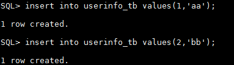
Install Informatica PWX CDC & PWX Publisher¶
Install Informatica PWX CDC in Linux¶
- Get the installation package
pwx1020_linux_em64t.tar. - untar the package and run
./install.sh, configure the installation path here is/opt/PowerExchange/10.2.0.
Configure the environment¶
-
open environment file
add the following configurationvi ~/.bash_profile
* runexport PWX_CONFIG=/opt/PowerExchange10.2.0/dbmover.cfg export PWX_HOME=/opt/PowerExchange10.2.0 PATH=$PATH:$HOME/bin:/usr/lib/oracle/12.1/client64/bin:/opt/PowerExchange10.2.0 export LD_LIBRARY_PATH=$ORACLE_HOME/lib:/opt/PowerExchange10.2.0 export NLS_LANG=AMERICAN_AMERICA.ZHS16GBK
source ~/.bash_profile* rundtlinfo,check the installation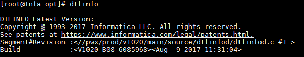
Configure dbmover.cfg and pwxccl.cfg file¶
-
Configure
dbmover.cfgas followingnodelnis the self defined listener node name

- the second
ORCLin ORACLEID is the database name to be listened.

- CAPT_PATH is the CDC control file path, the path should be created previously
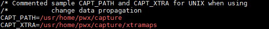
- define the SVCNODE and CMDNODE name

-
Configure
pwxccl.cfgas followingCONDENSENAMEshould be the same asSVCNODEindbmover.cfg- DBID is the database SID
- CAPTURE_NODE is the capture node name
- CAPTURE_NODE_UID is the database user name
-
CAPTURE_NODE_PWD is the database user password

-
Start listener and logger services


Use PWX CDC capture ORACLE log data¶
### install Informatica PWX CDC in Windows machine
-
Get the installation package and double click to install, add environment variable
PWX_CONFIG,configured as the dbmover.cfg file in PWX
-
Configure
dbmover.cfgfile- set listener name, add listener Information in server side
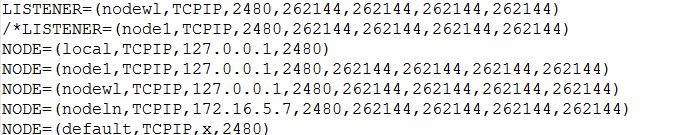 - set the listened database name
 - set the control file path
- set the control file path * start the listener
* start the listener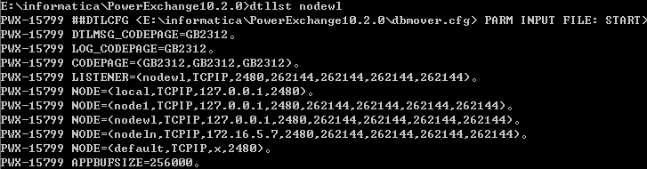 * start Navigator

-
In Navigator create a new registeration group as following:
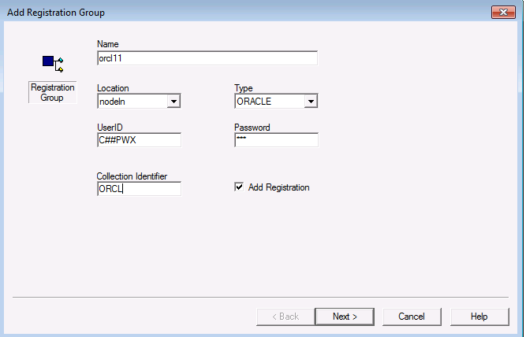
-
NEXT

-
chick next,we can see the test table created in oracle, double click the table name, choose all columns
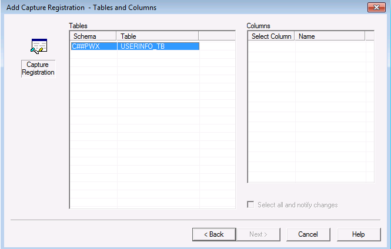
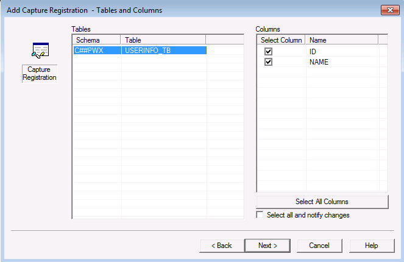
-
chick next, change state to
active, check boxrun DDL immediately, click finish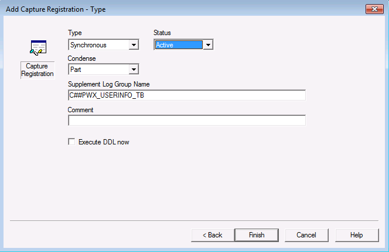
-
In Extraction Groups, double click the orcl11 created before, right click, add Extract Defination, set the map name and table name


-
click next, can see the capture created before
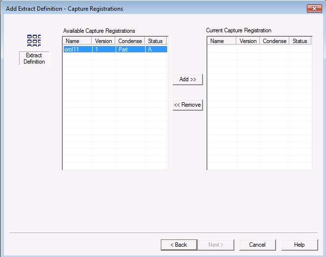
click add, finish
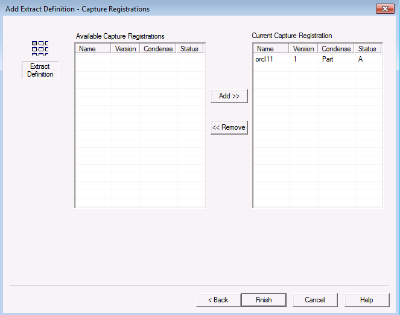
-
click the icon, run row test, the captured data is shown as following
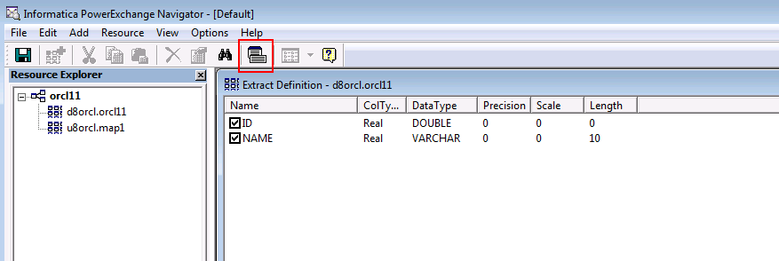

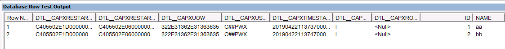
Use PWX CDC publisher to connect Kafka¶
### Change kafka configuration file
* Configure producer.properties, add the following configuration
sasl.mechanism = GSSAPI key.serializer = org.apache.kafka.common.serialization.StringSerializer value.serializer = org.apache.kafka.common.serialization.ByteArraySerializer key.deserializer = org.apache.kafka.common.serialization.StringDeserializer value.deserializer = org.apache.kafka.common.serialization.StringDeserializer
jaas.conf as following

- create a kafka topic, named
pwxtopiccd /opt/hadoopclient/Kafka/kafka/bin kafka-topics.sh --create --zookeeper 172.16.4.21:24002/kafka --partitions 2 --replication-factor 2 --topic pwxtopic
### Install Informatica PWX Publisher
* Get the package pwxcdcpub120_linux_x64.tar.gz,untar it
- Login as root，add the following configuration in
~/.bash_profilefileexport PWXPUB_HOME=/opt/pwxcdcpub120_linux_x64 export KAFKA_CLIENT_LIBS=/opt/hadoopclient/Kafka/kafka/libs export PWX_LICENSE=/opt/pwx1020.key
- source the environment, kerberos认证
source ~/.bash_profile source /opt/hadoopclien/bigdata_env kinit developuser
-
Copy all the files in directory
samplestoinstanceA/config> Configuration for PWX Publisher can refer to the Informatica user guide https://docs.informatica.com/data-integration/powerexchange-cdc-publisher/1-1/user-guide/configuring-powerexchange-cdc-publisher.html- Configure
cdcPublisherAvro.cfg
 - Configure
- Configure cdcPublisherCommon.cfg - Configure
- Configure cdcPublisherKafka.cfg, set kafka topic name and the properties file path - Configure
- Configure cdcPowerExchange.cfg* Extract.pwxCapiConnectionName is theCAPI_CONNECTIONindbmover.cfgfile * Extract.pwxExtractionMapSchemaName is the schema name in pwx extraction, here isu8orcl* Extract.pwxNodeLocation is pwx node name * Extract.pwxNodeUserId/Extract.pwxNodePwd and Extract.pwxXmapUserId/Extract.pwxXmappassword is database user name and pasword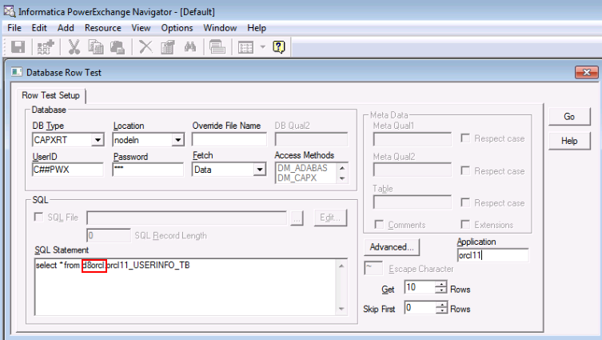


- Configure
-
Change the
PwxCDCPublisher.shfile in installation path bin,add the followingRUN="$RUN -Djava.security.auth.login.config=/opt/hadoopclient/Kafka/kafka/config/jaas.conf"

- Start pwx CDC Publisher,run
sh PwxCDCPublisher.sh

Start kafka consumer¶
- In FusionInsight HD Kafka client, run the following command to start consumer
source /opt/hadoopclient/bigdata_env kinit developuser cd /opt/hadoopclient/Kafka/kafka/bin ./kafka-console-consumer.sh --bootstrapserver 172.16.4.21:21007,172.16.4.22:21007,172.16.4.23:21007 --topic pwxtopic --new-consumer --consumer.config ../config/consumer.properties
-
Insert data in oracle, the captured data in kafka is the following
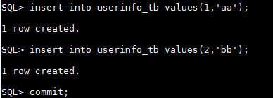

-
Update data in oracle, the captured data in kafka is the following


-
Delete data in oracle, the captured data in kafka is the following
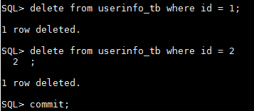

Q&A¶
1.Failed to start pwxccl
 A:Run the following script in oracle
A:Run the following script in oracle
exec SYS.DBMS_LOGMNR_D.BUILD(options => sys.dbms_logmnr_d.store_in_redo_logs);
grant sysdba to C##PWX